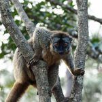
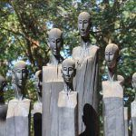
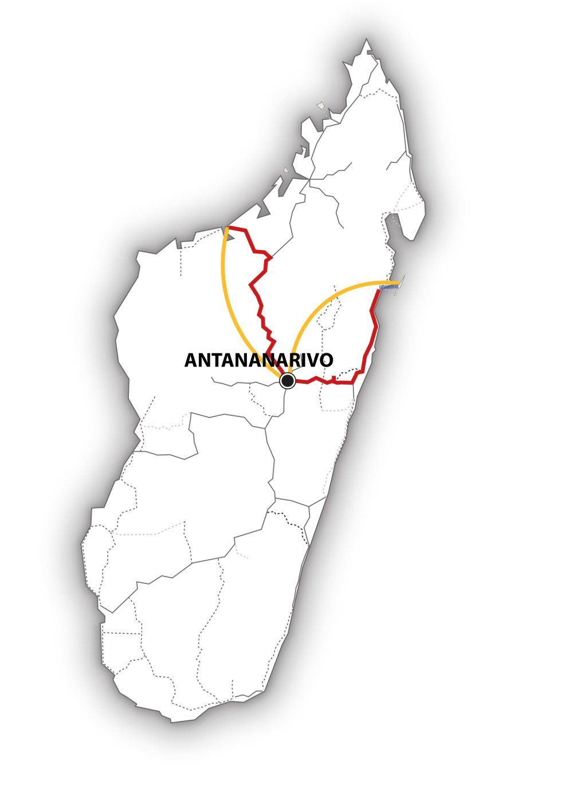

Madagascar – D’Ouest en Est… – MG119
Ce voyage aux multiples facettes nous emmène en diagonale à travers Madagascar en 14 jours… Quelles découvertes !
D’ouest en est, Au départ de Majunga, dans le Nord-Ouest fertile et chaud, nous traversons les Hauts-Plateaux malgaches, où le vent fait onduler hautes herbes et rizières… Nous admirons les superbes maisons en latérite rouge, avant de redescendre la falaise vers la Côte Est. Sans oublier de découvrir la fascinante flore et faune de la forêt tropicale humide. Enfin, voici le temps d’un repos bien mérité sur l’idyllique île de Sainte Marie, avec ses plages bordées de palmiers…

-

-

MG119 : Madagascar – D’Ouest en Est…
L’essentiel : 
• Les Côtes Ouest et Est de l’île
• Des Parcs nationaux très diversifiés
• L’île tropicale de Sainte-Marie.
Période :
Ce circuit est réalisable d’avril à décembre.
Itinéraire :
Antananarivo – Majunga – Ankarafantsika – Antananarivo – Andasibe – Tamatave – Soanierana Ivongo – Sainte Marie
Caractéristiques du circuit :
Région : Ouest, Hauts-Plateaux, Côte Est
Contenu : nature et nulture
Condition physique . moyenne
Jour 1 : Vol depuis la Suisse
Tonga Soa sur la Grande Ile ! Nous atterrissons en soirée à l’aéroport d’Antananarivo, et sommes emmenés à notre hôtel pour la première nuit.
Jour 2 : Antananarivo – Majunga (Mahajanga)
Notre circuit commence par un vol à destination de la ville côtière de Majunga, au nord-ouest de l’île, sur le canal du Mozambique. Au centre-ville, de nombreux restaurants, boutiques et petits marchés vous accueillent. Admirez l’imposant Baobab, dans le carrefour menant au fameux bord de mer. Prenez le rythme de Madagascar, et n’oubliez pas de goûter la fraîcheur du bord de mer en soirée, comme tous les Majungais !
Jour 3 : Mahajanga
Du temps pour se promener en ville, sur la plage, pour se laisser guider au hasard des découvertes… Ou encore visiter les nombreuses curiosités des environs de Mahajanga, le long de la Côte Ouest.
Jour 4 : Mahajanga – Ankarafantsika
Aujourd’hui, départ à destination du Parc National d’Ankarafantsika, l’une des plus anciennes aires protégées de Madagascar. L’après-midi, au cours d’une randonnée dans la forêt dense et sèche, nous découvrons plantes rares, oiseaux, reptiles et les fameux lémuriens.
Jour 5 : Parc national d’Ankarafantsika
Nous passons la journée dans le Parc national, et effectuons une exploration approfondie de la fascinante faune et flore d’Ankarafantsika. Au cours de la randonnée, nous sommes tout proches des animaux : plus de 100 espèces d’oiseaux et de nombreuses espèces de caméléons et de lémuriens vivent ici.
Jour 6 : Ankarafantsika – Maevatanana
Après une autre randonnée dans le Parc le matin, nous voici partis en voiture, en direction du Sud, à travers la fertile campagne malgache : rizières et plantations de tabac longent la route. Profitons d’arrêts spontanés pour apprécier les magnifiques paysages. En début de soirée, nous arrivons à Maevatanana. Cet endroit marque la transition vers les Hautes-Terres, plus fraîches et rouges.
Jour 7 : Maevatanana – Antanananarivo
Poursuivons notre route en direction d’Antananarivo, en serpentant à travers un paysage vallonné, de plus en plus stérile. Les maisons traditionnelles, construites en latérite rouge, nous annoncent l’arrivée sur les Hauts-Plateaux. En chemin, profitons de nombreuses pauses pour admirer les larges vallées et le ciel si limpide qui s’étend à l’infini. Arrivés à Antananarivo, nous avons le temps de profiter du coucher de soleil rouge sang sur les toits de la ville.
Jour 8 : Antananarivo – Andasibe
Aujourd’hui, nous quittons la capitale à destination de l’Est. Nous descendons au travers des hautes terres vers le village d’Andasibe. En chemin, nous visitons une ferme de caméléons et observons, de près, ces fascinants artistes du camouflage. Dans l’après-midi, une randonnée nous emmène dans le parc des orchidées à Andasibe.
Jour 9 : Andasibe
Aujourd’hui, visite du Parc National de Mantadia, situé dans une forêt dense humide, spécialement connue pour ses lémuriens Indri Indri, dont la fourrure noire et blanche et le cri sont si distinctifs. Nous avons toute la journée pour prendre le temps de découvrir les plantes tropicales uniques et s’émerveiller devant les animaux endémiques.
Jour 10 : Andasibe – Tamatave
Profitons d’une nouvelle visite dans la verte luxuriance de Mantadia, avant de prendre la route dans un paysage de plus en plus tropical, en direction de la Côte Est, vers la ville portuaire de Tamatave. Visitons le marché aux épices où les douces effluves et arômes de Madagascar nous titillent l’odorat : poivre, vanille, cannelle et girofle ne sont que quelques-uns des trésors vendus ici.
Jour 11 : Tamatave – Soanierana Ivongo -Sainte-Marie
Destination l’île des pirates ! Nous profitons du trajet le long de la côte jusqu’au petit port de Soanierana Ivongo. Après une traversée sur le bac, nous voici arrivés sur l’île magique de Sainte-Marie (Nosy Boraha). Quel festival de couleurs : le vert de la forêt tropicale, l’eau bleu turquoise, le blanc du sable fin.. Douillets bungalows et plages vides à l’ombre des palmiers nous tendent les bras – un cadre idéal pour le repos et le farniente…
Jour 12 – 14 : Sainte-Marie
Profitons pleinement de l’île : calme découverte du nord-est et visite enchanteresse des baies et formations rocheuses envahies par la végétation ? Ou alors, journée de lecture sous les cocotiers ? Nous avons le choix. De juin à septembre, les baleines à bosse migrent dans les eaux plus chaudes et viennent mettre bas le long de la côte – quel spectacle unique en son genre ! Ou pourquoi pas une petite excursion sur l’Ile aux Nattes, la délicieuse île voisine, sans route ni voiture ?
Jour 15 : Sainte Marie – Antananarivo
Aujourd’hui, il est temps de dire au revoir à cette île de rêve à l’histoire passionnante. La matinée est à notre disposition, une dernière visite au cimetière des pirates ? Après-midi : notre vol nous ramène à Antananarivo.
Jour 16 : Antananarivo
Utilisons ce dernier jour pour visiter la capitale, admirer ses anciennes maisons coloniales, monter les marches de ses nombreux escaliers et profiter de la vue imposante sur la ville depuis l’une des collines sacrées. En soirée, nous nous nous rendons à l’aéroport.
Jour 17 : Vol de retour
Notre avion décolle après minuit. Veloma !